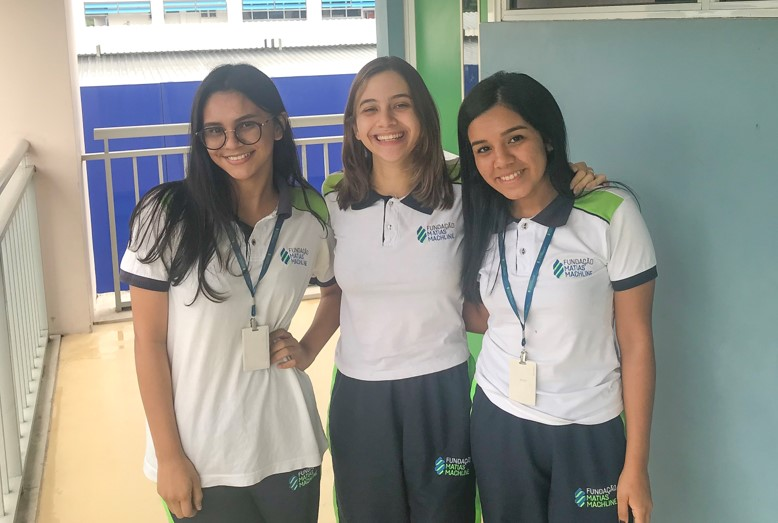
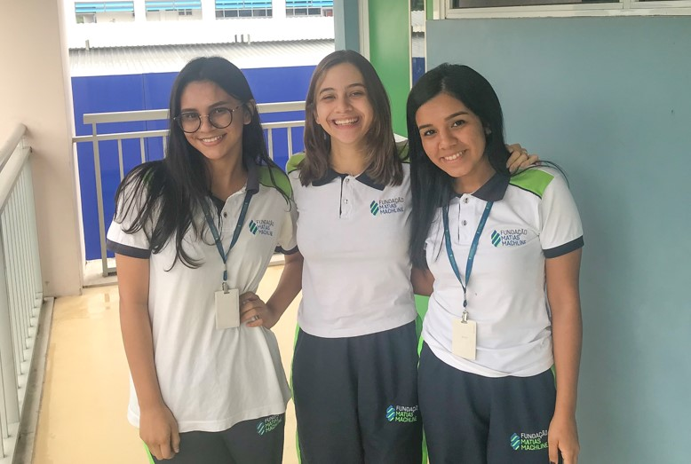

Somos a equipe Sonore, formada por três mulheres, estudantes concluintes do ensino médio técnico em Informática na Fundação Matias Machline e nos chamamos Amanda Freire, Paula Quadros e Rayna Menezes. Nesse ano de 2019, teríamos que apresentar um projeto de conclusão de curso baseado em tudo o que aprendemos no decorrer desses 3 anos, além de trabalhar em cima de temas que ajudassem o mundo a se tornar um lugar melhor. A partir dessa proposta, desenvolvemos a ideia de construir um jogo que pudesse ajudar a inserir adolescentes com Síndrome de Down no meio social e, ao mesmo tempo, auxilia-los a desenvolver a fala e a comunicação. Esse projeto se encaixa no décimo Objetivo Global entre os dezessete elaboradas pela Organização das Nações Unidas, cujo foco é Reduzir as Desigualdades. Acreditamos que com a aplicação Sonore, a inclusão social através da fala ajudará a amenizar as desigualdades enfrentadas por essa minoria.